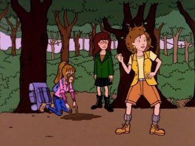

Episode Guide
Episode Guide
|  |
The Teachings of Don Jake Episode #112 - July 14, 1997 Written by Glenn Eichler Song List Entries For This Episode Oops! List Entries For This Episode Transcript For This Episode |
|
Previous "Road Worrier" (#111) |
Next "The Misery Chick" (#113) |
|
Cast |
|---|
|
Regular:
Daria,
Quinn,
Helen,
Jake,
Jane,
Trent
Guest:, Aunt Bernice, Uncle Max, Grandma Lane, other Lane family members, SSW Reporter Non-Speaking: None |
|
Plot |
|
Summary:
In order to relieve his stress, Helen, Daria and Quinn take Jake camping for the weekend, while Jane and Trent endure the hell that is a Lane family reunion. |
|
Interesting Tidbits |
Continuity:
|
|
Memorable Quotes |
|
Jake - It's my eye! Oh, God, it's my eye! (moves hand away to show one eye red from a burst blood vessel) Daria - Oh, no! (sotto voce to Quinn) Get the camera. Quinn - Ugh! Quinn - Don't worry about us, Mom. We'll be fine. Right, Daria? Daria - Absolutely. No guests, no late nights... Helen (VO) - Don't even bother, girls. You're coming with us. Quinn - (pounds fist on table) Dammit, Daria! You could've sounded like you meant it! (leaves) (after a moment, Daria softly pounds fist on table) Daria - Dammit! It's my turn to say dammit! Jane - Lemme get this straight. You, Jake, Helen, and Princess Grace are going camping? Like in the woods camping? Daria - I hope the raging envy you're feeling won't affect our friendship. Jane - I do envy you. Daria - Then I'm afraid the fever has reached your brain, and you'll have to be destroyed. Jake - Is this great, or what? For the next 72 hours, we're going to live off what nature send our way! (points) See that stream? That's our drinking water! (points) See those berries! That's our breakfast! Daria - See that skeleton? That's our future. (everyone looks; there's nothing there) Daria - Made you look. Jane - Trent. Trent. (she pulls headphones away from his ear) Trent! Trent - (wakes up) Officer it's not even my car. (flashback) Jake - We don't need big business electricity! We don't need manufactured foods! We don't need chemically-softened toilet paper! Helen - (eyes fly open) We don't? (flashback ends) (Helen rummages around in her backpack, and with a smirk, takes out a roll of toilet paper) Jake - Girls, doesn't all this beauty take you right out of yourselves? (pause) Helen - Daria? Daria - I think I'm getting a chill. If you don't mind, I'm gonna crawl back into myself for a while. Helen - What about you Quinn? Quinn - No phone??? Uncle Max - (slurred) I always liked you, Trent. You were my favorite. Trent - And why is that, Uncle Max? Uncle Max - Cuz you're a bum! You're a lousy bum! You're a rotten bum! You remind me of myself! You know why? Trent - Cuz I'm a bum. Uncle Max - That's right, ya bum! Grandma - Janey? Jane - Yes, Grandma? Grandma - Come closer. Jane - Yes, Grandma? Grandma - Closer. Jane - Yes, Grandma? Grandma - Closer. Jane - Yes, Grandma? Grandma - (shouts) What the hell is wrong with you! Quinn - What's Dad so worked up about, anyway? Helen - Oh, Quinn. It's not easy being an adult. Quinn - He can drive, he never has to take a pop quiz, and he can order a mimosa anytime he wants. What's the problem? Quinn - This is really scary, Daria. Daria - All right, let's not get panicked. We're going to look at the situation calmly and objectively. Agreed? Quinn - Okay. Daria - We're out in the middle of nowhere, nobody knows we're here, we have no way to contact anyone, and our parents have gone insane. Quinn - Yes. Daria - This is really scary, Quinn. Daria - Okay. Remain calm. Family's gone mad. Must get them back to civilization, but no way to contact civilization because Mother made big deal about cutting off all communications. What to do? (cellphone in Helen's backpack rings) Daria - Rely on Mother's hypocrisy to see us through this crisis. |
|
Mike Quinn's Delayed Reaction Review |
|
Eye-Popping Goodness:
It's a mystery why the blood vessels in Jake's eyes were bursting. :) Yeah, right! It was fairly obvious what was bothering him: money troubles. Oh, and that mid-life crisis had something to do with it, too. He's upset about all those doors closing, the "entry-level" job that he took (down the wrong path) and the way his father treated him. Taking pictures of him in that state wouldn't have helped, but if all of that was bothering him that long, it's amazing that he's held it together as long as he has (there were some things that tend to point to the fact that this wasn't the first time this has happened). Daria was almost trying to get this to happen (to take a picture) by telling Jake how much money Congress spends. |